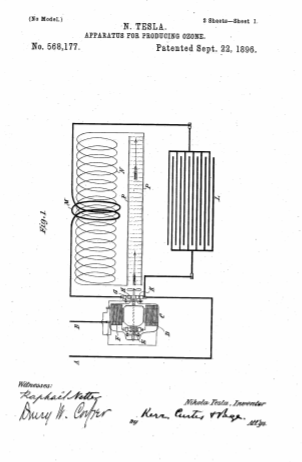
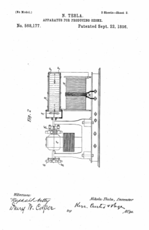

Descarga la patente original en esté enlace



Que se sepa que yo, NIKOLA TESLA , ciudadano de los Estados Unidos, que reside en Nueva York, en el condado y en el estado de Nueva York, he inventado ciertas mejoras nuevas y útiles en los aparatos para producir ozono, de las cuales la siguiente es una especificación, teniendo como referencia los dibujos que la acompañan y que forman parte de la misma.
La invención objeto de mi presente solicitud tiene principalmente como objeto proporcionar un aparato sencillo, económico y eficaz para la producción de ozono o gases que se obtengan por la acción de descargas eléctricas de alta tensión, aunque en la aplicación a tales fines. del aparato hasta ahora inventado por mí y diseñado para la producción de corrientes eléctricas de alta frecuencia y potencial. He realizado ciertas mejoras en dicho aparato que son novedosas y útiles en otras aplicaciones más generales del mismo. Hasta ahora he mostrado y descrito, notablemente en las Patentes No. 462,418 , fechadas el 3 de noviembre de 1891, y No. 454,622, de fecha 23 de junio de 1891, un aparato ideado con el propósito de convertir y suministrar energía eléctrica en una forma adecuada para la producción de ciertos fenómenos eléctricos novedosos que requieren corrientes de mayor frecuencia y potencial que las que pueden fácilmente o incluso posiblemente ser desarrolladas por generadores de los tipos ordinarios o por los aparatos mecánicos que se conocían hasta ahora. Este aparato implicaba medios para utilizar la descarga intermitente u oscilante de la energía eléctrica acumulada de un condensador o un circuito que posee capacidad en lo que puede denominarse circuito "de trabajo" o el que contiene los dispositivos de traslación o medios para utilizar tales corrientes. En mi mejora actual he utilizado aparatos de este carácter general en condiciones y en combinación con ciertos instrumentos, descritos a continuación, que me permiten producir, sin dificultad y con un gasto mínimo, ozono en las cantidades que desee. Yo diría que el aparato que he ideado para este propósito es capaz de otros usos muy importantes de naturaleza similar, pero para los propósitos del presente caso considero suficiente describir su funcionamiento y efectos cuando se usa con el propósito de generar ozono.
En los dibujos adjuntos, ilustrativos del principio de construcción y modo de funcionamiento de mi mejora, la Figura 1 es una ilustración esquemática de mi invención; y la figura 2, una vista, en parte en alzado lateral y en parte en sección, del aparato tal como lo construyo para uso práctico.
Los dispositivos que se describen a continuación están especialmente diseñados para su aplicación directa y uso con circuitos existentes que transportan corrientes continuas, tales como los circuitos municipales ordinarios de iluminación incandescente.
Sea AB las terminales de cualquier circuito de este carácter. En tal circuito conecto un motor electromagnético C de cualquiera de las formas habituales. Es decir, las bobinas del campo y el inducido pueden estar en serie o derivación o totalmente independientes, y una o ambas están conectadas en el circuito. En el caso presente, un terminal, como B, está conectado a uno de los bornes de conexión, desde el cual se conduce el circuito a través de una bobina de campo, D, las escobillas y el conmutador E, la otra bobina de campo, F, y de allí a una escobilla G, que descansa sobre un circuito-controlador H, que consiste en general en un disco o cilindro conductor con secciones aislantes en su periferia. El otro terminal, como A, se conecta con una segunda escobilla K, que se apoya en el controlador, de modo que la corriente que pasa por el motor y lo hace funcionar se interrumpe periódicamente. Por esta razón, los núcleos de hierro del motor deben laminarse. Alrededor del controlador se forma un circuito de baja autoinducción, que incluye un condensador L y el primario M de un transformador. El circuito, incluido el motor, es de autoinducción relativamente alta, y esta propiedad le es impartida por las bobinas del motor o, cuando estas no son suficientes, por la adición de bobinas de estrangulamiento adecuadas, de modo que en cada ruptura del circuito del motor se desarrollará una corriente de alta fuerza electromotriz para cargar el condensador, que por lo tanto puede ser pequeña y económica. El condensador descarga a través del circuito que se completa a través de las escobillas GK y el controlador H, y desde la autoinducción de este circuito, así como la capacidad del propio condensador, se puede dar prácticamente cualquier valor deseado, la frecuencia de la corriente de descarga se puede ajustar a voluntad. El potencial de la corriente de descarga de alta frecuencia se eleva mediante una bobina secundaria N en relación inductiva con la primaria M. Los conductores de dicho circuito secundario están conectados a dos placas conductoras aisladas PP, y cuando el aparato está en funcionamiento una descarga en forma de corrientes se mantendrá entre dichas placas, como lo indican las líneas onduladas en las figuras. Si se fuerza aire entre las placas P durante esta descarga, la eficacia del aparato aumenta y se genera ozono en grandes cantidades. Para asegurar este resultado, encerro dichas placas PP en una carcasa R de cualquier descripción adecuada, a través de la cual se mantiene una corriente de aire mediante un ventilador S, montado en el eje del motor.
Este aparato puede construirse y combinarse en forma muy compacta y con una brújula pequeña. Su funcionamiento implica un pequeño gasto de energía, mientras que no requiere prácticamente ningún cuidado o atención para la producción continuada de ozono en cantidad ilimitada.
Lo que reclamo como mi invento es:
Nikola Tesla.